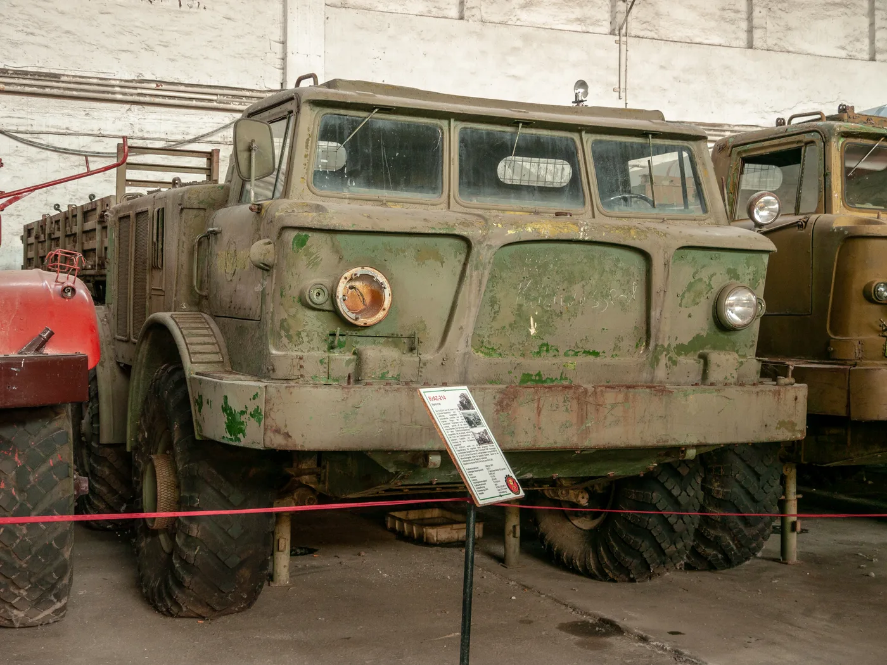

Dos motores bajo una misma carrocería ya suenan fuera de lo común. El ZIL-135 iba un paso más allá: en las versiones clásicas de esta familia soviética, un motor impulsaba las cuatro ruedas del lado izquierdo y el otro, las cuatro del derecho. No era un camión de carretera al que se le agregó potencia por capricho. Era un chasis de ocho ruedas motrices pensado para llevar cargas especiales por terrenos difíciles.
La frase “uno para cada lado” es correcta, pero necesita contexto. El ZIL-135 no fue una sola versión inmutable: comenzó con prototipos anfibios y terminó en una familia de vehículos de transporte y plataformas militares. La explicación técnica que sigue se centra especialmente en el ZIL-135LM, el modelo que llegó a una producción prolongada y del que existen fotografías bien documentadas.
Una máquina nacida para una carga muy particular
A fines de los años cincuenta, el equipo de vehículos especiales de ZIL, asociado al ingeniero Vitali Grachev, trabajaba en transportadores de gran movilidad. Según el Museo Militar-Técnico de Chernogolovka, los primeros ZIL-135 y ZIL-135B fueron prototipos anfibios construidos entre 1958 y 1959. La prioridad era disponer de un chasis capaz de llevar sistemas grandes y pesados donde un camión corriente no podía trabajar con facilidad.
Los ensayos hicieron abandonar la idea de usar una plataforma flotante para ese cometido. El proyecto evolucionó hacia vehículos terrestres de alta movilidad. En 1960 llegaron los ZIL-135E, ya cercanos en apariencia a los modelos posteriores. En abril de 1961 se construyó el primer ZIL-135L, que incorporó cambios importantes en la suspensión. Esta secuencia importa: las cifras y los componentes de un prototipo temprano no deben trasladarse automáticamente a un LM de serie.
Cómo se repartía la fuerza entre los lados
La disposición de los motores se entiende mejor si se imagina el vehículo dividido longitudinalmente. Detrás de la cabina había dos motores colocados en paralelo. Cada uno enviaba fuerza a su propia transmisión y a las ruedas de uno de los costados. El museo resume la arquitectura como dos grupos motrices separados: uno para las ruedas izquierdas y otro para las derechas. No era un único motor que repartiera potencia mediante un diferencial central convencional.
En el ZIL-135LM, el museo identifica dos motores nafteros V8 de aproximadamente siete litros cada uno, normalmente ZIL-375Ya o ZIL-509, con 180 CV nominales por motor. La cifra combinada de 360 CV expresa la suma de ambas potencias nominales; no significa que una sola rueda o un solo costado recibieran toda esa potencia. Las primeras versiones experimentales habían utilizado otros motores, por lo que hablar de “dos V8 de 180 CV” describe al LM, no a todo ZIL-135 jamás construido.
Esta solución permitía impulsar los cuatro ejes sin pasar la potencia de un único motor a ambos costados mediante un conjunto central más complejo. También creaba dos cadenas de transmisión que debían trabajar de forma coordinada. Si una fallaba, el vehículo no se comportaría como un 8×8 normal; cuánto podía moverse dependería de la falla, del terreno y de la carga. No conviene prometer que podía completar cualquier misión con un solo motor.
Ocho ruedas, pero no cuatro ejes iguales
El ZIL-135LM tenía cuatro ejes. Los dos centrales estaban muy próximos entre sí, mientras que los extremos quedaban más separados. Dirección tenían las ruedas del primer y del último eje. Esa combinación daba una silueta inconfundible y respondía a necesidades de maniobra y reparto de peso de un vehículo largo.
Hay un detalle que suele simplificarse de más: no todas sus ruedas carecían de suspensión. El Museo Militar-Técnico explica que los prototipos rígidos mostraron limitaciones en las pruebas. El ZIL-135L recibió suspensión de brazos y barras de torsión en las ruedas delanteras y traseras; las parejas centrales permanecieron unidas rígidamente al bastidor. Por eso la frase “el ZIL-135 no tenía suspensión” confunde variantes y ejes diferentes.

Del proyecto de ZIL a la fabricación en Briansk
La letra M del ZIL-135LM señala una evolución decisiva de la transmisión. El proyecto ZIL-135L utilizaba cajas hidromecánicas, pero la fabricación en la planta de Briansk, conocida como BAZ, se organizó con cajas mecánicas convencionales. El recorrido histórico del museo atribuye el cambio a que BAZ no quiso incorporar a su producción la compleja transmisión automática. Así nació el LM de serie.
Dos motores y dos transmisiones significaban también más elementos que ajustar y vigilar: alimentación, encendido, refrigeración, lubricación y mando de ambos conjuntos. En una aplicación exigente, un taller no podía pensar en “el motor” en singular. Esta es una consecuencia mecánica de la arquitectura, no una afirmación de que cada unidad se averiara con frecuencia. Tampoco debe confundirse una caja mecánica en el LM con la configuración de los prototipos anteriores.
El museo presenta una ficha del LM de carga con 9.000 kg de capacidad, cerca de 10.500 kg en vacío y una velocidad máxima de 75 km/h en carretera. Son datos de esa configuración documentada; una plataforma de lanzamiento, un transportador o un prototipo pueden tener peso y prestaciones distintos. El mismo museo señala que la fabricación continuó hasta 1993, después de varias décadas de producción en Briansk.
Para qué se usó realmente
Su empleo más conocido fue como base de equipos militares. El ZIL-135LM llevó, entre otros, componentes del sistema Luna-M y del lanzacohetes múltiple Uragan. La fotografía de portada muestra un vehículo preservado con una plataforma Luna-M: documenta una de esas aplicaciones, no un camión de reparto civil. Tanto el Museo de Técnica Civil y Militar de Alemania como la ficha del Ejército de EE. UU. describen la división de motores por lado y la dirección de los ejes extremos.
También existieron versiones con plataforma de carga, tractores y otros usos especializados, pero fueron mucho menos comunes que las configuraciones militares, según el Museo Militar-Técnico. Una de las unidades civiles conservadas trabajó en la propia fábrica ZIL transportando equipamiento grande. Esa excepción es interesante precisamente porque muestra que el chasis podía adaptarse, sin convertirlo en un camión habitual de rutas comerciales.
¿Era mejor tener dos motores?
Para su misión original, el esquema aportaba una forma particular de llevar fuerza a ambos lados de un vehículo 8×8. El diseño se sostuvo durante años, lo que indica que era viable para esos usos. Pero viable no significa universalmente mejor. Dos motores ocupan espacio, demandan combustible y multiplican tareas de servicio. En una flota civil orientada a costo por kilómetro, esa complejidad tendría que justificarse con una necesidad muy concreta.
También es importante no confundir el reparto izquierda-derecha con una dirección “de tanque”. El ZIL-135LM dirigía las ruedas delanteras y traseras; no giraba normalmente haciendo avanzar un costado y retroceder el otro. Las transmisiones laterales explican la tracción, mientras el sistema de dirección explicaba cómo cambiaba de rumbo. Son funciones relacionadas, pero no idénticas.
La lección para quien mira camiones en Argentina
El ZIL-135 es una gran demostración de ingeniería pensada desde la carga hacia el vehículo. Primero hubo una misión muy exigente; después se eligieron motores, transmisiones, ruedas y bastidor para cumplirla. En el transporte argentino actual, la pregunta equivalente es menos espectacular y más útil: ¿qué configuración resuelve la ruta, la carga y el mantenimiento reales?
Un sistema excepcional puede ser excelente para un cometido excepcional. Fuera de ese contexto, el consumo, la disponibilidad de repuestos y la capacidad del taller pesan tanto como la potencia. El ZIL-135 no se hizo famoso solo por “tener dos motores”: se volvió memorable porque cada uno movía un lado distinto de un chasis de ocho ruedas, una respuesta concreta a un problema de movilidad de su época.